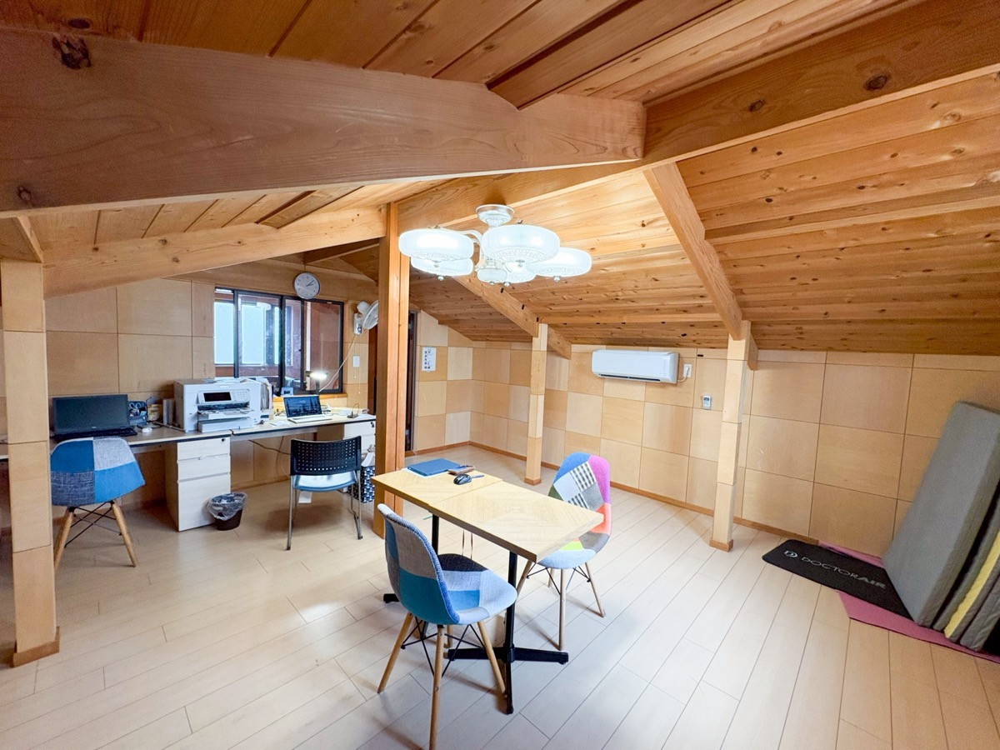
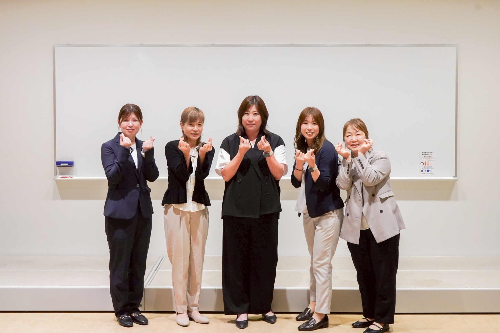
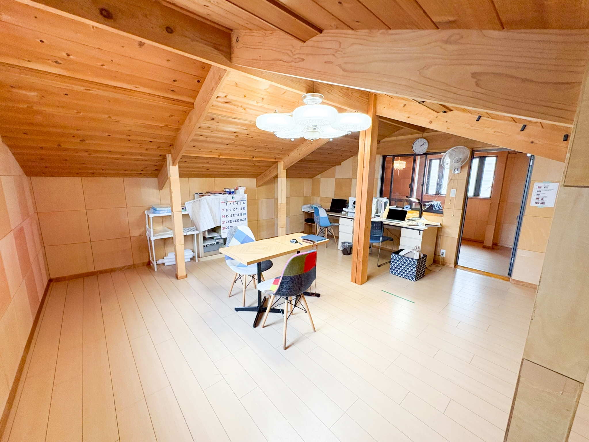
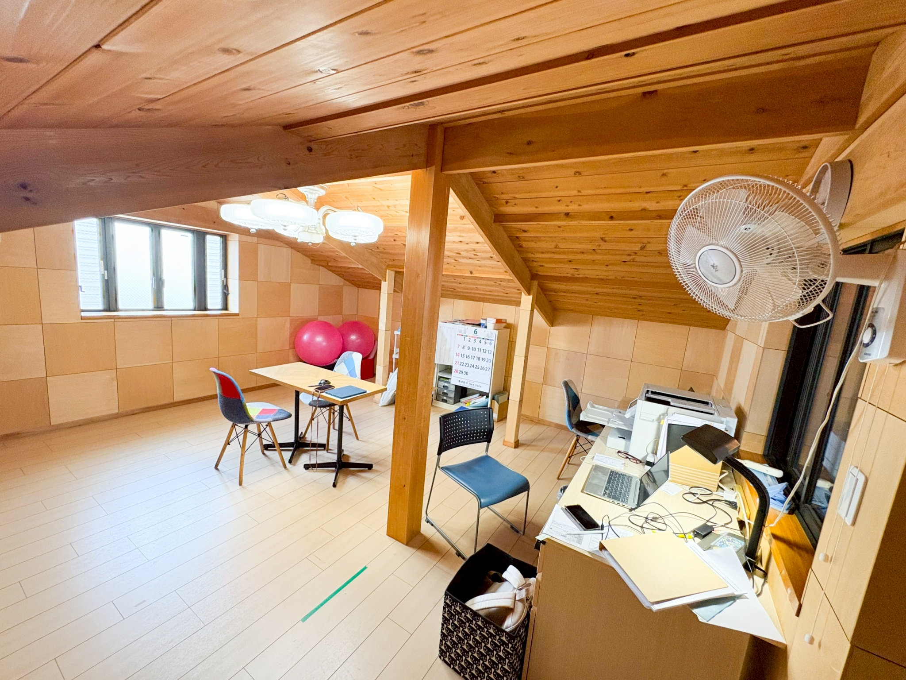

一人ひとりに寄り添い、安心できる未来へつなぐ
福祉サービスの利用計画（サービス等利用計画）の作成から、日常の困りごとのご相談まで。ご本人とご家族の伴走者として、必要な支援へとしっかりつなぎます。大和・町田エリアを中心に対応しています。
フットワークの軽い迅速な対応で、あなたの「想い」に寄り添い、未来を一緒に描きます。地域に根ざした相談支援を届けます。



相談支援の流れや詳細情報はこちら
ニューバリーで、あなたのチカラを活かしてください。